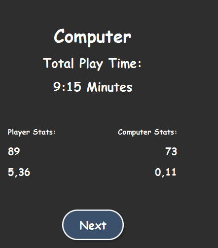
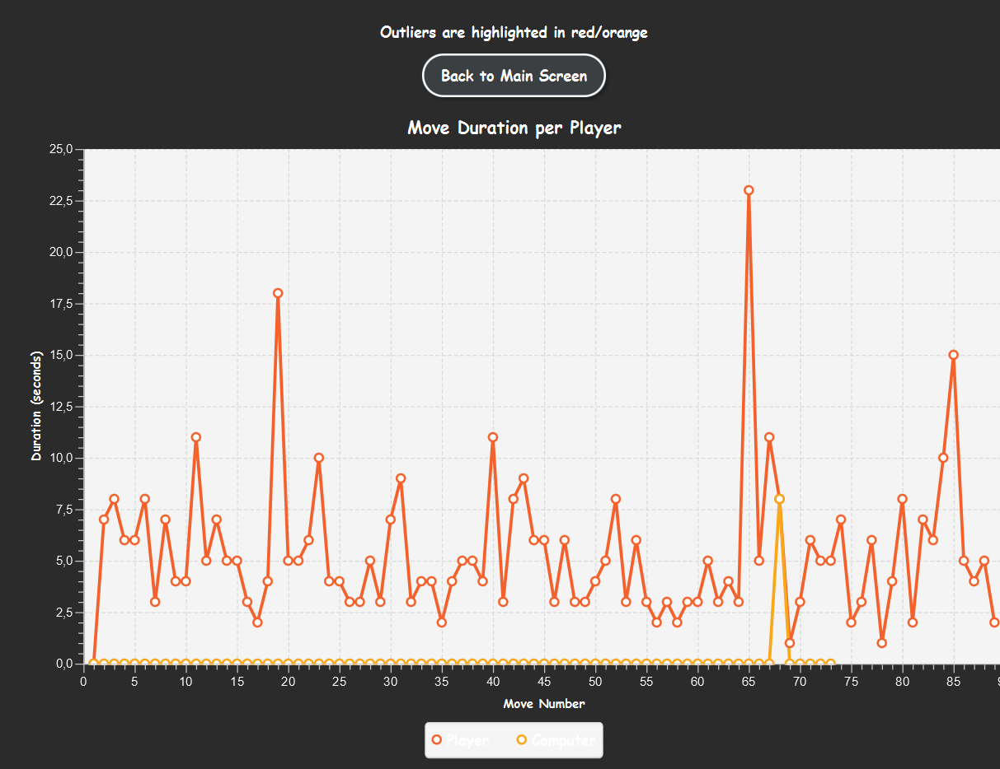

Sprint 2 Milestones
Prog : Application beta version - Daniel, Hildo, Mira, Attiqa
1: Game Screen Implementation Using MVP
Created the main game screen using the Model-View-Presenter (MVP) pattern:
- Model: Manages the game logic (e.g., turn order, move validation, score updates).
- View: JavaFX layout that shows the game board, player info, and controls.
- Presenter: Handles user interactions (e.g., pawn movement), updates the model, and refreshes the view.
The screen supports multiple turns between players, updates the board visually after each move, and reflects current game stats. For now, the game plays in a simplified form without special rules or end-game detection.
2: User Input Screen
Created a user input screen for players to enter their names and choose game settings (such as color and preferences).
- The screen allows users to input their names and customize their game settings, which are saved for the duration of the game session.
- The layout follows the wireframe with basic styling and functionality.
3: Simplified Game Logic Implementation
Implemented simplified game logic for handling turns and player actions. The logic focuses on basic gameplay without additional special rules (e.g., no game-ending conditions yet).
- Focused on essential actions like moving pieces and updating scores.
- Refined logic for handling user interactions and ensuring smooth transitions between turns.
4: Database and Game Data Storage
Set up basic database schema for storing player data, game moves, and scores for future use in the leaderboard and statistics screens.
- Created tables for game state, players, and moves.
- Prepared the framework for storing and retrieving data as needed.
Infra Sprint 01: Rework and resubmission - Hildo, Daniel
🔧 Improvements Based on Feedback
1. Sudoers File Cleanup
Based on technical feedback, we identified and removed an unused project_admins.save.1 file with incorrect 440 permissions in /etc/sudoers.d. This cleanup ensures secure sudo access and avoids potential conflicts.
2. PostgreSQL Connection Logging
We reconfigured PostgreSQL to enable detailed connection logging, following coach suggestions. A test case was added to validate that each client connection is now correctly logged in the database logs.
3: Subnet Mask & Firewall Verification
We corrected the subnet mask configuration across our servers and verified open ports using firewall-cmd. Screenshots were retaken on the actual VMs instead of Packet Tracer to ensure authenticity and accuracy.
Infra # 4: Web Server - Hildo
🌐 Web Server Setup
1: Apache Installation & Auto-Start
Apache was installed and configured to start automatically on reboot, ensuring the web server runs continuously.
2: Firewall Configuration
Port 80 was opened in the firewall to allow external access to the web server via HTTP.
3: Basic Website Deployment
An index.html file and a team picture were added to the default DocumentRoot at /var/www/html.
4: File & Folder Permissions
Files were set to rw-r--r-- and folders to rwxr-xr-x with ownership
root:apache.
5: Folder Structure & Naming
Organized content into subfolders: html, img, css, js,
and media using lowercase, ASCII-only filenames without spaces.
6: UTF-8 Encoding
All webpage files are UTF-8 encoded to ensure proper character rendering across different systems.
Infra # 5: Network Sniffing - Mira
1: Tcpdump Setup
Installed tcpdump and identified the active network interface (ens18) to monitor traffic on the server.
2: HTTP Traffic Capture
Captured HTTP traffic with Wireshark (PC) and tcpdump (server), then verified the session in Apache logs and analyzed it using Wireshark.
3: PostgreSQL Traffic Capture
Captured and analyzed database traffic on port 5432; verified PostgreSQL logs and confirmed visible queries and credentials without SSL.
Data # 4: Game Statistics implementation - Attiqa, Daniel
1: Game Statistics at the End of the Game
Implemented a screen that pops up at the end of the game showing the following summary statistics:
- Player who won the game.
- Total play time, calculated from game start to end.
- Total number of turns/moves per player, noting that players who lost do not have additional turns once the game ends.
- Average duration per turn/move for each player.
- Score
Also, a visual presentation was added to display the duration per turn/move per player, with outliers highlighted (based on time deviations from the majority).
2: Leaderboard with Overall Scores
The leaderboard displays player rankings based on various metrics such as:
- Rank (based on user-selected criteria).
- Player name.
- Number of games played.
- Number of wins and losses.
- Percentage of games won.
- Average number of moves per game.
- Average duration per turn/move.
- Total score
The leaderboard is dynamically sorted based on the selected ranking metric (e.g., by number of wins, average duration per turn, etc.).
3: Database Design and Implementation
Created the necessary tables and implemented scripts to read from and write to the PostgreSQL database. The database stores the following:
- Game data (winner, total play time, moves, etc.).
- Player data (name, statistics, etc.).
- Move data (player moves, timestamps, durations, etc.).
Implemented SQL DML and DQL scripts to handle data operations required for the end of game and leaderboard screens.
4: Scripts/Methods to Read and Write Data to the Database
Developed Java methods using JDBC to connect to the database, read game and player data, and update the database with relevant statistics. The data operations cover:
- Storing game statistics (end-of-game data).
- Retrieving leaderboard data for displaying rankings.
These scripts will trigger when a game ends or when the leaderboard screen is requested, ensuring up-to-date game data is displayed.
5: End of Game and Leaderboard Screen Implementation
Created JavaFX screens to display:
- End of game statistics (winner, play time, turns/moves per player, etc.).
- Leaderboard with sortable columns for player rankings based on selected metrics.
Implemented JavaFX code using the MVP pattern (View for layout, Presenter for logic) to display dynamic and interactive screens. Each screen includes:
- JavaFX code for the end-of-game statistics screen (with graphs for turn durations).
- JavaFX code for the leaderboard screen, with sorting functionality.  